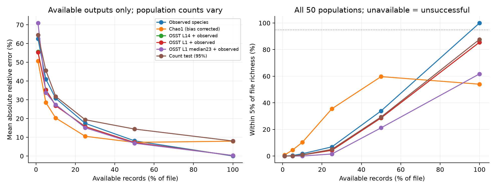
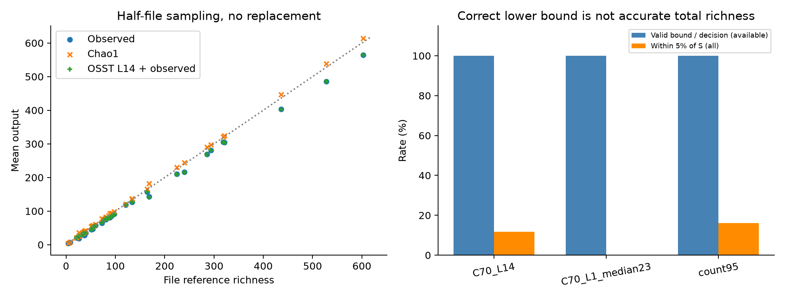

2026-11-16 · 本地实际运行与保存结果核对
原算法、改进常数算法、真实数据经验分布、理论证书和原始试次均已有对应材料。目前证据支持支持规模承诺检验和有效支持下界；不能把它们改写成“物种总数预测准确率95%”。本轮真正逐条生成、读取已有观测标签，并以完整文件的已记录物种数作为参照。未知自然总体的真实总物种数仍然未知。
原版 C0=2^26、L0=1024 已复现；先后完成 C0=1025、(70,16)、(70,14) 的实验与审计。最新本地 (70,1) 在所有 n>=1、0<epsilon<1 的 iid 泊松模型下有计算机辅助充分性证明，记录的联合失败上界为0.331。本轮核对了该证明清单中的源码和证书哈希，未重新宣称完成一遍全部解析证明审查。旧 (70,14) 的更强保证和新 (70,1) 的较弱单次保证应分开解释；此前README没有完整呈现11月4日这批结果。论文稿、PDF和数据已存在，仍缺乏在真实小物种数数据上优于强计数基线的样本效率证据，不能据此判断已经达到顶会录用要求。
历史10个经验总体来自螨类、南北鸟类、两种处理的蜘蛛、蛾、蜗牛、BCI树木、两年Inch Lake鱼，合计50,994条计数。11月新增MidFish、LTRM、NRMN、EPA NRSA、BBS五来源，各8个群体，共40个总体、9,785,885条计数，物种数26至603。这些40组按预定的六个最大记录数组和两个中部组选择，并非随机代表所有生态系统。汇总丰度被展开为单个观测标签；记录是捕获、鸟类观测、鱼类目击或树木计数，不一概代表独立且从未重复的动物个体。已下载但未纳入验证的数据不能计入实验：eBird当前仅有单种教程，AmazonFish/Ictio偏出现记录，CPUE与eDNA读数不能直接当作动物个体数。此外旧实验还使用了NIPS/Enron词频、MovieLens评分、Online Retail商品类别；这些验证离散类别方法的跨领域表现，不计作生态物种验证。
| dataset | groups | total_N | min_N | max_N | min_S | max_S | 名称 |
|---|---|---|---|---|---|---|---|
| midfish | 8 | 3288240 | 33634 | 589928 | 26 | 82 | MidFish 淡水鱼 |
| ltrm | 8 | 1177023 | 4681 | 301725 | 34 | 54 | LTRM 河流鱼 |
| nrmn | 8 | 4578749 | 24967 | 1762118 | 35 | 603 | NRMN 珊瑚礁鱼 |
| epa_nrsa | 8 | 693799 | 49653 | 110734 | 121 | 321 | EPA NRSA 河流鱼 |
| bbs | 8 | 48074 | 602 | 10966 | 52 | 98 | BBS 鸟类 |
| mite | 1 | 9800 | 9800 | 9800 | 35 | 35 | 螨类 |
| bird_north | 1 | 202 | 202 | 202 | 27 | 27 | 北部鸟类 |
| bird_south | 1 | 307 | 307 | 307 | 38 | 38 | 南部鸟类 |
| spider_girdled | 1 | 168 | 168 | 168 | 26 | 26 | 环割地蜘蛛 |
| spider_logged | 1 | 252 | 252 | 252 | 37 | 37 | 伐木地蜘蛛 |
| moths | 1 | 15609 | 15609 | 15609 | 240 | 240 | 蛾类 |
| okland | 1 | 1689 | 1689 | 1689 | 21 | 21 | 蜗牛 |
| bci | 1 | 21457 | 21457 | 21457 | 225 | 225 | BCI 热带树木 |
| fish_2007_seine | 1 | 1180 | 1180 | 1180 | 8 | 8 | Inch Lake 2007 鱼 |
| fish_2008_seine | 1 | 330 | 330 | 330 | 4 | 4 | Inch Lake 2008 鱼 |
40总体 x 16配置 x 2000次 = 1,280,000条泊松路径，78次联合失败，平均0.00609%。最差配置1.10%，640配置的同时95%置信失败上界为2.271%，即在这个有限网格上有统计证据支持每格成功率至少97.729%。这不是所有分布的95%保证，也不是总物种数误差在5%内。259,098条路径有合法且更紧的下界，另17次错误抬高，61次错误拒绝；同预算计数原本全部成功。独立1%风险计数对照有35次失败，最差0.45%；OSST均值预算仍是其8.09至10.59倍。这些数据足以暴露真实失败和收益，但没有显示整体精度或采样成本优势。
统一50个总体，共9,836,879条源计数。每个总体、每种抽样模型固定128个独立随机种子，合计12,800条完整标签流；有放回随机读取记录索引形成iid经验分布样本，不放回随机排列全部记录形成有限文件样本。每条流检查1%、5%、10%、25%、50%、100%的可用记录预算，共3,600个方法配置、460,800次配对评估。方法和预算共享同一条流，不能把这些评估次数当成独立野外样本数。程序实际处理约25.18亿个重排/重采样标签，未增加真实调查记录。每个算法的n由预算和epsilon=0.1确定，完全不使用参照物种数S或有效支持eff。所有泊松长度先生成；超过预算时不输出，统计时计为不成功，不重抽直到成功。独立审计重建所有表中指标，每总体每模型重放一条完整流，并进行高精度评分核对。
第一，理论正确概率：原始输出满足 min(eff_epsilon,n)<=S_hat<=min(S,n)，承诺检验正确。eff_epsilon是覆盖至少1-epsilon概率质量所需的最少物种数，epsilon不是算法犯错概率。第二，有限试验的95%置信区间：这是对某个成功率的估计区间。本轮给出逐格Clopper-Pearson区间及另列的Bonferroni同时区间。第三，总数误差不超过5%：|输出-S|<=0.05S。这是另外一个目标，原论文并不保证。表中的2.5%和97.5%分位数是重复运行输出的中间95%范围，不是自然总体物种数的95%置信区间。对 (70,1) 使用23次独立重复、二元多数表决和整数下界中位数，精确二项式失败界为0.04562647；再加0.001泊松预算截断风险，小于0.05。仅iid模型有此推论，不放回抽样不自动继承该定理。该放大保证下界有效，不保证接近S；在固定总预算下，分成23份会降低每份样本量。
原始输出被n截断。即使已经看到35种，n=28时仍可能输出28；将它直接解释为总物种数是不合适的。因此新增一个明确标记为事后报告层的结果：max(已经看到的种数, 原始下界)。它不丢掉已知物种，仍是下界，不是无偏总数估计，也不是原论文输出。使用一半记录、不放回抽取时，直接计数在50个总体上的平均绝对相对误差为8.13%，误差落在±5%内的比例为33.91%。Chao1相应为7.28%和59.70%，仍远非95%的总体预测成功率。保留已发现物种后的C70L14可在42/50个总体启动，其可运行总体平均误差为7.23%；把不可运行也计入分母，±5%成功比例为28.64%。不同方法可运行总体不同，不能直接用可运行平均数宣称优劣；common_population_metrics.csv另外给出共同总体的对照。在共同可运行的42个总体、相同半文件预算下，直接计数的平均误差为6.84%，C70L1报告下界为7.21%，Chao1为5.56%；三者的±5%成功比例依次为37.31%、34.15%、64.84%。这些方法的实际读取数仍可能不同，OSST泊松长度及预算剩余均已记录，不把预算上限等同于实际成本。在符合理论抽样条件的iid半文件预算实验中，C70L14加预算截断后现有联合保证至少99.81%，但参照82种的MidFish报告下界均值仅77.85种，603种的NRMN均值550.28种，319种的EPA均值298.76种，225种的BCI均值204.66种。四者下界覆盖观测上均为100%，总数±5%成功比例却分别只有57.81%、0%、8.59%、0%，具体值见examples_iid95_half_sample.csv。完整文件读完后直接计数必然等于文件参照S，这是盘点而不是对未知野外物种的预测。Chao1全文件时仍可能外推，故本有限文件目标下会高估。
| 数据 | population | 记录数 | 真实记录物种数 | 读取记录数 | 直接计数均值 | 论文截断输出 | 保留已发现物种后的下界 | 下界均值相对误差百分比 | 下界在正负5百分比内的比例 | Chao1均值 | 下界输出2_5分位 | 下界输出97_5分位 |
|---|---|---|---|---|---|---|---|---|---|---|---|---|
| MidFish 淡水鱼 | midfish_7f62e037bd | 589928 | 82 | 294964 | 78.90 | 78.85 | 78.85 | 3.84 | 87.50 | 81.84 | 77.00 | 81.00 |
| LTRM 河流鱼 | ltrm_9300397bb9 | 4686 | 36 | 2343 | 32.24 | 10.00 | 31.76 | 11.78 | 4.69 | 37.50 | 29.00 | 35.00 |
| NRMN 珊瑚礁鱼 | nrmn_af72da7f36 | 524181 | 603 | 262090 | 564.63 | 564.24 | 564.24 | 6.43 | 3.91 | 614.19 | 554.17 | 573.83 |
| EPA NRSA 河流鱼 | epa_nrsa_af3ce9cc24 | 107326 | 319 | 53663 | 305.46 | 305.05 | 305.05 | 4.37 | 70.31 | 321.42 | 299.00 | 311.00 |
| BBS 鸟类 | bbs_3cfd793b60 | 10966 | 93 | 5483 | 86.49 | 33.00 | 85.83 | 7.71 | 11.72 | 94.27 | 82.00 | 90.00 |
| 螨类 | mite | 9800 | 35 | 4900 | 35.00 | 28.00 | 35.00 | 0.00 | 100.00 | 35.00 | 35.00 | 35.00 |
| 蛾类 | moths | 15609 | 240 | 7804 | 216.52 | 53.00 | 214.95 | 10.44 | 0.00 | 244.49 | 208.00 | 221.82 |
| BCI 热带树木 | bci | 21457 | 225 | 10728 | 210.63 | 79.00 | 209.70 | 6.80 | 10.16 | 230.70 | 204.00 | 215.00 |
| 伐木地蜘蛛 | spider_logged | 252 | 37 | 126 | 28.28 | 预算不足 | 预算不足 | 预算不足 | 0.00 | 41.22 | 预算不足 | 预算不足 |
示例都是读取50%源记录的128次不放回重排。数字是平均输出；分位范围描述重复结果，不是物种总数置信区间。


重新分析历史n=2S的诊断实验：这个n使用了参照真值，只能解释机制，不能冒充可部署预测。即便不受n截断影响，同预算计数在epsilon=0.1时平均相对误差仍为19.20%，±5%比例为30.99%；epsilon=0.01时分别为5.66%和68.55%。说明稀有物种漏检确实存在，不能只归因于阈值选得小。降低epsilon通常增加预算、改善结果，但没有将概率质量误差转换成种数相对误差。许多极稀有物种可以共用很小概率质量，有限样本无法普遍区分它们与不存在的物种；没有最小丰度等附加假设时，不应承诺总数相对误差保证。
本轮46,579项主审计通过，保存每条路径的物种计数、泊松长度、输出、固定种子、代码快照及协议。数值评分使用向外舍入包围及必要时Arb复核，PRNG和泊松随机数仍是数值实现；没有把它们称为理想实数采样器。真实物种标签有来源限定、未定种过滤、同物异名合并；仍可能存在检测偏差、跨地点混合和记录相关。随机打乱只改变排列，不能证明原野外采样是iid；有放回验证仅针对文件经验分布。本轮所有epsilon固定为0.1；更多epsilon的直接流验证尚未跑，历史泊松网格覆盖0.01、0.1、0.5、0.9。当前完整程序的目标是规模检验/支持下界。若论文要声称总物种数预测，应另外定义估计器、做不使用S的参数选择、给出物种级误差与区间覆盖，并加入Chao/ACE等丰富度基线、时间/地点留出和调查事件整组验证。若继续原论文目标，则重点应放在同一风险和总预算下的额外正确拒绝、下界提升及大支持/稀有尾部优势；不能只增加重采样次数。
在项目根目录运行：OPENBLAS_NUM_THREADS=1 .venv/bin/python -m real_stream_95.run --out 新目录；然后对同一输出目录依次运行 real_stream_95.derive、real_stream_95.audit、real_stream_95.report，各加 --out 新目录；不加 --out 时默认使用本次结果目录。完整原始表为results.csv，未截断报告层为reported_lower.csv，原文件顺序鱼类案例为fish_source_order.csv。本次只新增分析与实验目录，没有提交或推送GitHub，也没有覆盖既有冻结结果。